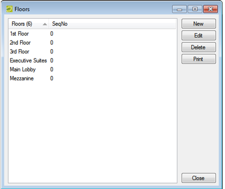
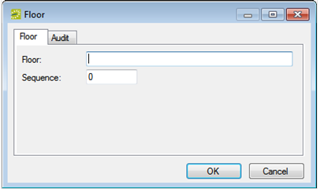

A floor is optional information that you can provide when defining a room. This information will facilitate sorting, reporting, and searching for rooms. A room can be assigned to only a single floor. Example of floors include First Floor, Basement, and Garden Level. When you configure a floor, you must provide a floor name and a sequence.
On the

Floors Configuration Page
Click New. The Floor Configuration dialog box opens.

Floor Configuration Dialog
In the Floor field, enter a name or description for the new floor (maximum of 50 characters, including spaces).
Optionally, in the Sequence field, enter a sequence for the new floor. The sequence determines the order in which the floors are displayed in the Floor drop-down list. The lower the sequence number, the higher in the list that the floor is displayed. If the sequence is set to the default value of zero for all floors, then the floors are first sorted numerically, and then alphabetically, in the Floor drop-down list.
Click OK. The Floor configuration page closes. You return to the Floors window with the newly added floor automatically selected.